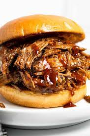

Pulled Pork

Description
Pulled pork is an American barbecue dish, more specifically a dish of the Southern U.S., based on shredded barbecued pork shoulder. It is typically slow-smoked over wood; indoor variations use a slow cooker. The meat is then shredded manually and mixed with a sauce.
Ingredients
- 4 lb pork shoulder or butt
- 2 tablespoons oil
- 1 tbsp brown sugar
- chili powder
- onion powder
- garlic powder
- cumin
- kosher salt
- black pepper
- bbq sauce
Steps
- Trim pork of excess fat and cut into 4 pieces.
- Combine spices in a small bowl and rub all over the pork. (This can be done the night before).
- Sear (optional): Heat a few tablespoons of oil in a Dutch oven pot over medium-high heat. Add the meat and sear for a few seconds on all sides.
- Oven Method: Preheat oven to 300 degrees F. Pour coke around the pork in the Dutch oven pot. Cover pot with lid and cook for 3 hours. Remove lid and cook for an additional 1-2 hours, until pork is tender and easily pulls apart with a fork. Remove from oven and shred meat. Toss in barbecue sauce, if desired.
- Slow Cooker Method: Place pork in slow cooker and pour coke around it. Cover and cook on LOW (recommended) 8 hours or high for 4-5 hours, until pork is tender and shreds easily with a fork.
- Instant Pot Method: Place pork in instant pot and pour coke around it. Cook on Manual/High pressure for 70 minutes. When timer beeps, allow the pot to naturally release pressure, about 15 minutes longer. Remove lid and shred the meat.